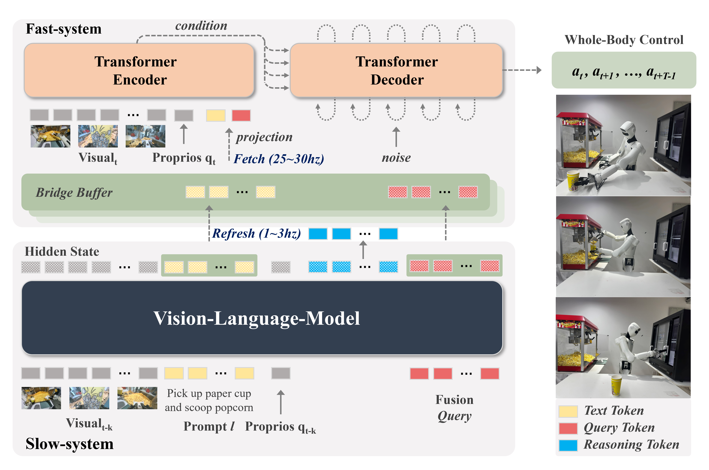
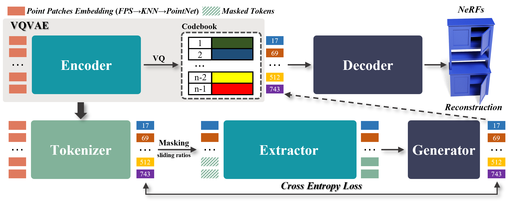
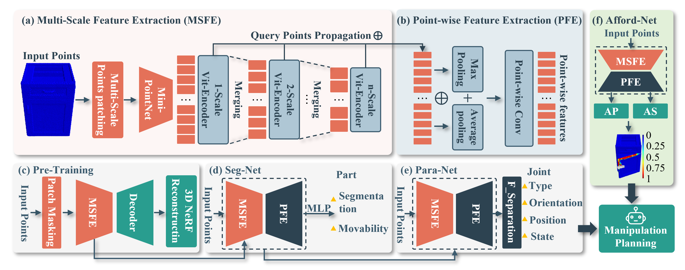
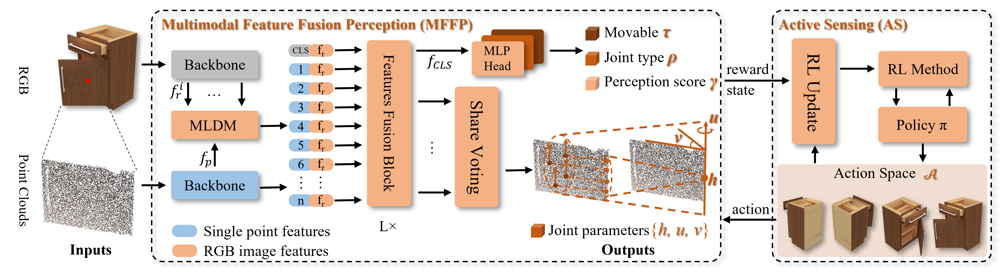
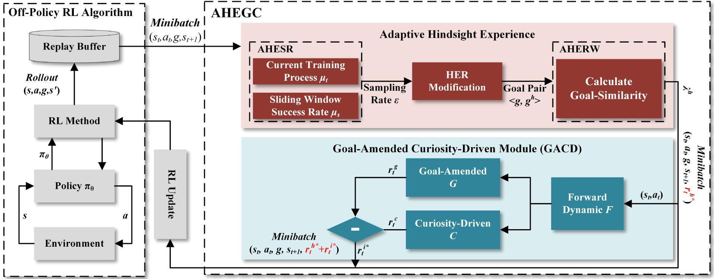

I received my Ph.D. from the School of Computer Science and Engineering at South China University of Technology (SCUT), advised by Prof. Ping Zhang. I received my B.E. from the School of Mechanical and Automotive Engineering at SCUT. My research interests include embodied intelligence and computer vision.
A brief description of what this project does and why it matters. One to two sentences.
A brief description of what this project does and why it matters. One to two sentences.
A brief description of what this project does and why it matters. One to two sentences.


Point-UMAE: Unet-like Masked Autoencoders for Point Cloud Self-supervised Learning
IEEE International Conference on Acoustics, Speech and Signal Processing (ICASSP), 2025
Active Visual Learning for Robots with Dueling Deep Q-Networks and Transformer Encoders
IEEE International Conference on Acoustics, Speech and Signal Processing (ICASSP), 2025



AHEGC: Adaptive Hindsight Experience Replay With Goal-Amended Curiosity Module for Robot Control
IEEE Transactions on Neural Networks and Learning Systems (TNNLS), 2024 JCR Q1, IF: 10.4
South China University of Technology, School of Computer Science and Engineering
Research on embodied intelligence and computer vision, advised by Prof. Ping Zhang.
South China University of Technology, School of Mechanical and Automotive Engineering